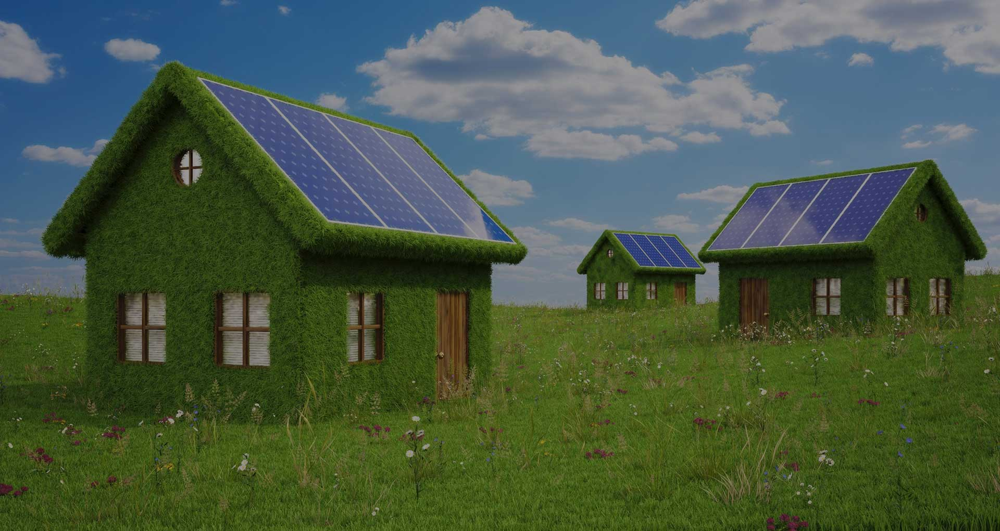
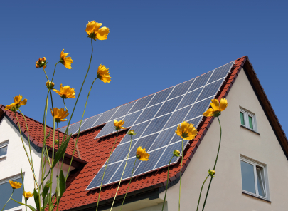
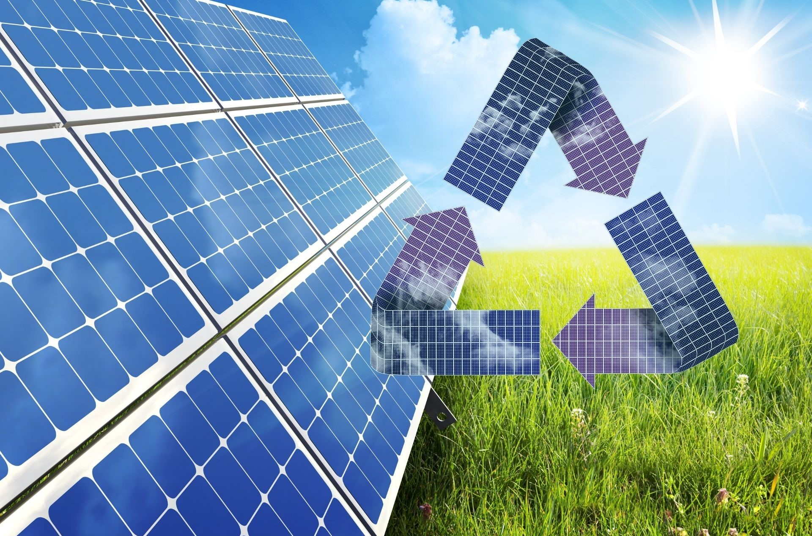
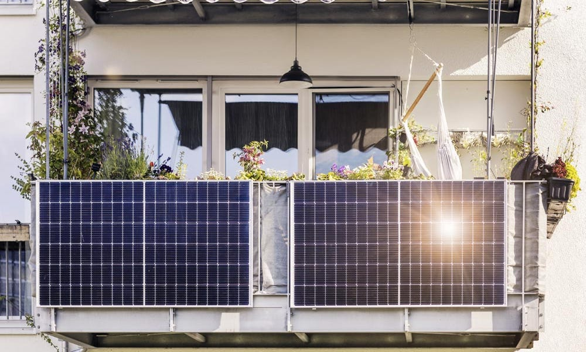
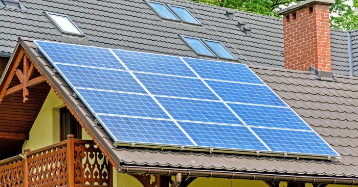

<!DOCTYPE html>
<html lang="en">
    <head>
        <meta charset="UTF-8">
        <meta name="viewport" content="width=device-width, initial-scale=1.0">
        <title>Home</title>

    </head>
</html><!DOCTYPE html>  
<html lang="ro-RO">

<head>
    <meta charset="UTF-8">
    <meta name="viewport" content="width=device-width, initial-scale=1.0">
    <title>Home</title>
    <link rel="stylesheet" href="style.css">
    <script src="https://kit.fontawesome.com/f18a20cbeb.js" crossorigin="anonymous"></script>

    <nav class="top-nav">
        <section></section>
        <input id="menu-toggle" type="checkbox" />
        <label class="menu-button-container" for="menu-toggle">
        <div class="menu-button"></div>
        </label>
        <ul class="menu">

          <li><a href="Home.html">Home</a></li>
          <li><a href="Produse.html">Produse</a></li>
          <li><a href="Cumpara.html">Cumpara</a></li>
          <li><a href="Contact.html">Contact</a></li>

        </ul>
      </nav>
</head>


<body>
    <section class="section hero" aria-label="home">
        <div class="container">
            <div class="hero-content" data-reveal="left">
                <h1 class="h1 hero-title">
                  Panouri <span class="span">Seriale</span>
                </h1>
                <a href="Cumpara.html" class="btn btn-primary">
                  <span class="span">Cumpără acum</span>
                  <ion-icon name="arrow-forward-outline" aria-hidden="true"></ion-icon>
                </a>
            </div>
              <figure class="hero-banner" data-reveal="right">
                
              </figure>
        </div>
    </section>
    
   

    
<section class = "about">

    <div class = "Home-h1">
        <h1>Independență energetica</h1>
    </div>
    
    <div class="row">
        <div class="about-col">
            <figure class="hero-banner" data-reveal="right">
            
          </figure>
        </div>
        <div class="about-col">
            <p style="text-indent: 20px;">
                <span style="display: inline-block; margin-left: -20px;">Bine</span> ai venit în lumea energiei viitorului! Îți deschidem ușile 
                către o oază solară, unde panourile devin surse inepuizabile de energie. 
                Descoperă puterea soarelui și transformă lumina în energie pentru un viitor 
                mai luminos și sustenabil. Bun venit pe platforma noastră dedicată panourilor 
                solare, locul unde începe călătoria către independența energetică!
            </p>
            
    </div>  
</section>

<section class = "about2">

        <div class = "Home-h2">
            <h1>Energie regenerabilă și durabilă</h1>
        </div>

        <div class="about-col1">
            <figure class="hero-banner" data-reveal="right">
                
              </figure>
        </div>

            <p style="text-indent: 20px;">
                
                <p style="text-indent: 20px;">
                    <span style="display: inline-block; margin-left: -20px;">Sunt</span> soluția ideală pentru a accesa o sursă de 
                    energie regenerabilă și durabilă. Prin captarea 
                    și transformarea luminii solare în energie 
                    electrică, aceste panouri oferă oportunitatea 
                    de a utiliza resursele naturale fără a le epuiza. Lumina solară, fiind o sursă inepuizabilă, este disponibilă în mod constant și este unul dintre cele mai abundente resurse din natură.

                    Această tranziție către energia solară 
                    contribuie semnificativ la reducerea dependenței 
                    de combustibilii fosili și la diminuarea 
                    impactului negativ asupra mediului înconjurător.
                    Energiea solară nu generează emisii de gaze cu 
                    efect de seră sau alte poluanți nocivi, 
                    în contrast cu metodele tradiționale de generare
                    a energiei, precum cele bazate pe cărbune sau
                    petrol.
                </p>

            </p>
</section>

<section class = "about2">
    <br></br>
    <br></br>
    <br></br>
    <br></br>
    <br></br>
    <br></br>
    
    <div class = "Home-h3">
        <h1>Impact redus asupra mediului</h1>
    </div>

    <div class="about-col2">
        <figure class="hero-banner" data-reveal="right">
            
          </figure>
    </div>

        <p style="text-indent: 20px;">
            
            <p style="text-indent: 20px;">
                <span style="display: inline-block; margin-left: -20px;">Această</span> 
                tranziție către energia solară contribuie
                semnificativ la reducerea dependenței de 
                combustibilii fosili și la diminuarea impactului 
                negativ asupra mediului înconjurător. Energiea solară 
                nu generează emisii de gaze cu efect de seră sau alte 
                poluanți nocivi, în contrast cu metodele tradiționale 
                de generare a energiei, precum cele bazate pe cărbune
                sau petrol.
                Un alt aspect important al acestei surse 
                de energie este că procesul de generare a 
                electricității din lumina solară este 
                silențios și non-invaziv din punct de 
                vedere al mediului înconjurător. Această 
                caracteristică adaugă un beneficiu 
                suplimentar, reducând impactul asupra 
                ecosistemelor și biodiversității.
            </p>

        </p>
</section>

<section class = "about2">
    
    <br></br>
    <br></br>
    <br></br>
    <br></br>
    <br></br>
    <div class = "Home-h2">
        <h1>Economii pe termen lung</h1>
    </div>

    <div class="about-col1">
        <figure class="hero-banner" data-reveal="right">
            
          </figure>
    </div>

        <p style="text-indent: 20px;">
            
            <p style="text-indent: 20px;">
                <span style="display: inline-block; margin-left: -20px;">Panourile</span> 
                noastre transformă lumina solară în electricitate fără costuri suplimentare 
                de combustibil sau de întreținere extensivă, permițându-ți să reduci semnificativ 
                sau chiar să elimini dependența de sursele tradiționale de energie.
                Prin utilizarea energiei solare, vei observa o scădere semnificativă a 
                facturilor lunare la energie electrică, deoarece vei produce o parte sau chiar 
                întreaga cantitate de energie necesară pentru acoperirea consumului casei sau afacerii 
                tale.
            </p>

        </p>
</section>
<br></br>
<br></br>
<br></br>
<br></br>
<br></br>
<br></br>
<br></br>
<br></br>

<footer>
    <div class = "icons">
    <a href="https://www.facebook.com/"><i class="fa-brands fa-facebook fa-sm"></i></a>
    <a href="https://www.instagram.com/"><i class="fa-brands fa-instagram fa-sm"></i></a>
    <a href="mailto: tudor59@yahoo.com"><i class="fa-regular fa-envelope fa-sm"></i></a>
    </div>
    <p>
        <span class="nowrap">Copyright &copy; <time id="year"></time></span>
        <span class="nowrap">Panouri SERIALE</span>
    </p>

    <script src="script.js"></script>

    <script type="module" src="https://unpkg.com/ionicons@5.5.2/dist/ionicons/ionicons.esm.js"></script>
    <script nomodule src="https://unpkg.com/ionicons@5.5.2/dist/ionicons/ionicons.js"></script>

</body>

</html>